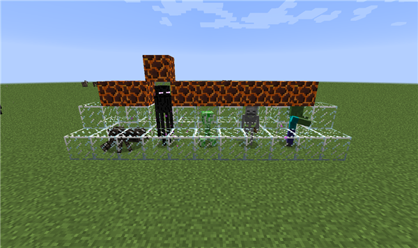
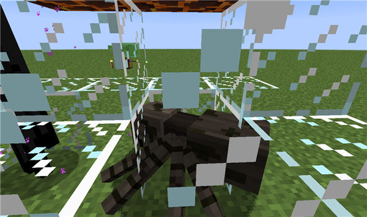
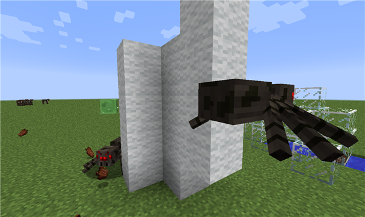
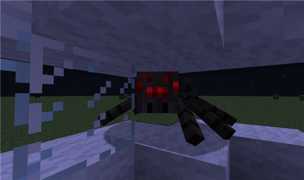
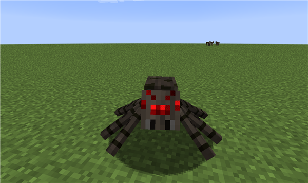
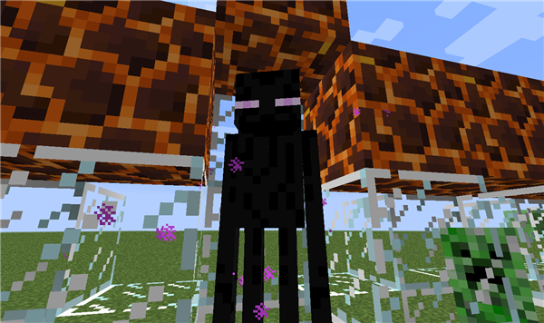
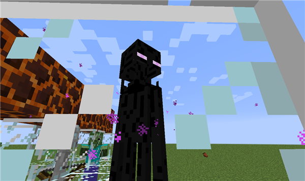
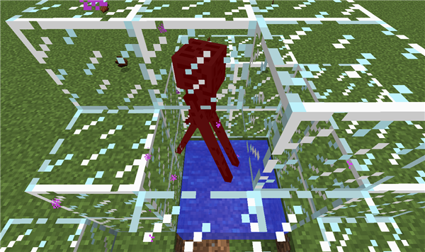

【小白攻略】敌对生物之寻常篇
2019-07-09 作者：矮人
大家好啊，这里是好久不见的攻略君，这么长时间不见了，给大家偷偷说个惊喜哦！攻略君已经成功捕捉到了那些平时在夜晚游荡，伺机袭击小伙伴和村民的那些坏家伙们了！不过攻略君并不想简简单单的把他们关起来，而是打算借此机会向各位小伙伴普及一下这些坏家伙，好在日后的居家旅行等等事宜上免受其害——攻略君决定把这一系列介绍称之为敌对生物手册！
那么事不宜迟，马上让我们进入最常见的坏蛋组合吧，让我们欢迎——日常组的坏家伙们！
让我介绍一下，从左到右依次是：
潜行在黑影中的魔头，蜘蛛！
来无影去无踪，战斗力惊人的，末影人！
想要给你热情的拥抱，以至于激动的要爆炸的，爬行者！
嗖嗖嗖射入你心房，号称爱的战士的，骷髅！
想和你来个亲密接触的，僵尸！
这五个坏家伙只要天一黑就会偷偷摸摸的出现在你身旁，无论你是在沙漠，丛林还是地下，他们都有可能偷偷摸摸的从角落里出现，然后大展其能，帮助你免费回家，现在就让我一个个为你介绍吧，本次将会为大家讲述两个敌对生物——蜘蛛与末影人。
首先是蜘蛛先生！其实在怪人云集的寻常坏蛋组里面，蜘蛛还不是一个特别棘手的对手，但是它确实有其独到的烦人之处。
蜘蛛的攻击方式是近战，但是它会跳跃着对你发动进攻，小伙伴们对付蜘蛛的时候如果一不小心就会被它搞得晕头转向，还是比较麻烦的，更何况它会爬墙，有时甚至会偷偷从悬崖摸过来给你致命一击。
而且更重要的是，蜘蛛的碰撞体积是1格高2格宽，也就是说，如果你的窗户或者地板不小心留下了小小两格宽的缝隙，那么蜘蛛就可以从这种地方轻松的钻进来攻击你，甚至从山崖缝隙中把你打下去。
在墙壁上爬行的蜘蛛
此外，蜘蛛只会在黑夜里主动对你发动袭击，如果进入白天，那么它们会变得懒洋洋的，只有在你攻击的时候才会反击，因此不要恐惧在白天的蜘蛛哦。
你好啊！——来自黑夜里的蜘蛛问候
俺对你没兴趣——来自白天懒洋洋的蜘蛛
好啦，在这里，我们给蜘蛛总结一下：
会跳跃攻击，会爬墙，白天乖孩子晚上要你命，悬崖杀手。
小伙伴们在遇见它的时候不要惊慌，首先保证自己不会被蜘蛛一下打落悬崖或者被其他蜘蛛偷袭，然后屏气凝神，堂堂正正的与蜘蛛打一架就好！
顺带一提，蜘蛛会掉落蜘蛛丝与蜘蛛眼，都是非常有用的东西，所以……
下面有请我们的第二位出场者，能暴打你的末影人先生，每次夜晚末影人先生都会在你家门口传来传去，不知道小伙伴有没有对他感到好奇呢？
正常情况下的末影人
关于这位神秘的先生有几点需要注意：
末影人虽然只会使用近战，但这个黑黑高高的家伙会使用传送来瞬间接近你，加上他的高伤害，小伙伴非常容易被初见杀。
但是不用着急，末影人并没有想象中的那么可怕，一是因为末影人其实不会主动攻击我们，只要我们盯着他……
被激怒之后的末影人，视觉上最明显的变化就是张开了它的嘴
他就会生气狂暴，此时会主动对我们发动攻击，而且末影人是不会被阳光点燃的，所以如果激怒了末影人，我们要不然尽快击杀它，要不然就躲入水中——末影人会受到水的伤害，并且会主动避开水，因此借助水源来躲避末影人是个不错的主意。
因为水而受伤的末影人，在下一秒钟就瞬间传送离开了水源
此外，如果你带上了南瓜，末影人就不会注意到你的视线，所以即使你看再久，末影人也不会狂暴，顺带一提，因为末地充满了末影人，因此南瓜在末地的探索也是大有用处哦。
偶尔末影人会搬走一部分建筑方块（箱子，红石机关等末影人不会搬走），如果不辛拆除的是你家的建筑方块的话，我们只需要击败末影人就可以拿回自己的方块啦！
末影人会掉落末影珍珠，它可以合成末影之眼用来寻找通向末地的要塞，还可以用来进行短距离传送——只要你能承受的住其带来的伤害。
我们最后为末影人总结一下吧，会传送，会狂暴，还会偷你家东西，但是它怕水！带上南瓜就不怕与他对视啦。
以上就是本次攻略的全部内容，在下一篇介绍中，我会为大家继续介绍这一组常见的敌对生物，并且给大家带来僵尸病毒的治愈方法，请大家保持期待~这里是攻略君，祝你有美好的一天，让我们下次见！